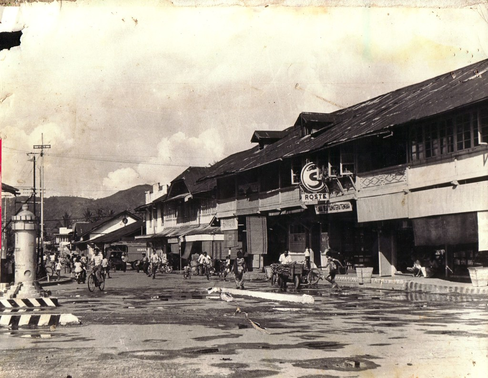

Dahulu wilayah Solok (termasuk kota Solok dan kabupaten Solok Selatan) merupakan wilayah rantau dari Luhak Tanah Datar, yang kemudian terkenal sebagai Luhak Kubuang Tigo Baleh. Disamping itu wilayah Solok juga merupakan daerah yang dilewati oleh nenek moyang Alam Surambi Sungai Pagu yang berasal dari Tanah Datar yang disebut juga sebagai nenek kurang aso enam puluh (artinya enam puluh orang leluhur alam surambi Sungai Pagu). Perpindahan ini diperkirakan terjadi pada abad 13 sampai 14 Masehi.
Kabupaten Solok bukanlah daerah baru karena Solok telah ada jauh sebelum undang-undang pembentukan wilayah ini dikeluarkan. Pada masa penjajahan Belanda dulu, tepatnya pada tanggal 9 April 1913, nama Solok telah digunakan sebagai nama sebuah unit administrasi setingkat kabupaten yaitu Afdeeling Solok sebagaimana disebut di dalam Besluit Gubernur Jenderal Belanda yang kemudian dimuat di dalam Staatsblad van Nederlandsch-Indie. Sejak ditetapkannya nama Solok setingkat kabupaten pada tahun 1913 hingga saat ini Solok tetap digunakan sebagai nama wilayah administratif pemerintahan setingkat kabupaten/kota.
Pada tahun 1970, ibu kota Kabupaten Solok berkembang dan ditetapkan menjadi sebuah kotamadya dengan nama Kota Solok. Berubah statusnya Ibu kota Kabupaten Solok menjadi sebuah wilayah pemerintahan baru tidak diiringi sekaligus dengan pemindahan ibu kota ke lokasi baru. Pada tahun 1979 Kabupaten Solok baru melakukan pemindahan pusat pelayanan pemerintahan dari Kota Solok ke Koto Baru, Kecamatan Kubung, namun secara yuridis Ibu kota Kabupaten Solok masih tetap Solok.
Dengan dikeluarkannya Undang-undang nomor 22 tahun 1999 tentang Pemerintahan Daerah, pemerintah kabupaten/kota diberikan kewenangan yang nyata dan luas serta tanggung jawab penuh untuk mengatur daerahnya masing-masing. Kabupaten Solok yang saat itu memiliki luas 7.084,2 Km² memiliki kesempatan untuk melakukan penataan terhadap wilayah administrasi pemerintahannya. Penataan pertama dilakukan pada tahun 1999 dengan menjadikan wilayah kecamatan yang pada tahun 1980 ditetapkan sebanyak 13 kecamatan induk ditingkatkan menjadi 14 sementara jumlah desa dan kelurahan masih tetap sama.
Penataan wilayah administrasi pemerintahan berikutnya terjadi pada tahun 2001 sejalan dengan semangat “babaliak banagari” di Kabupaten Solok. Pada penataan wilayah administrasi kali ini terjadi perubahan yang cukup signifikan di mana wilayah pemerintahan yang mulanya terdiri dari 14 kecamatan, 11 Kantor Perwakilan Kecamatan, 247 desa dan 6 kelurahan di tata ulang menjadi 19 kecamatan, 86 Nagari, dan 520 jorong. Wilayah administrasi terakhir ini ditetapkan dengan Perda nomor 4 tahun 2001 tentang pemerintahan Nagari dan Perda nomor 5 tahun 2001 tentang Pemetaan dan Pembentukan Kecamatan.
Pada akhir tahun 2003, Kabupaten Solok kembali dimekarkan menjadi dua kabupaten yaitu Kabupaten Solok dan Kabupaten Solok Selatan. Pemekaran ini di lakukan berdasarkan Undang-undang Nomor 38 tahun 2003 dan menjadikan luas wilayah Kabupaten Solok berkurang menjadi 4.594,23 Km². Pemekaran inipun berdampak terhadap pengurangan jumlah wilayah administrasi Kabupaten Solok menjadi 14 Kecamatan, 74 Nagari dan 403 Jorong.
Dengan berbagai pertimbangan dan telaahan yang mendalam atas berbagai momentum lain yang sangat bersejarah bagi Solok secara umum, pemerintah daerah dan masyarakat menyepakati peristiwa pencantuman nama Solok pada tanggal 9 April 1913 sebagai sebuah nama unit administrasi setingkat kabupaten pada zaman Belanda sebagai momentum pijakan yang akan diperingati sebagai hari jadi Kabupaten Solok. Kesepakatan inipun dikukuhkan dengan Perda Nomor 2 tahun 2009 tentang Penetapan Hari Jadi Kabupaten Solok. Pada tanggal 9 April 2010, merupakan kali pertama Kabupaten Solok memperingati hari jadinya yang ke 97.
